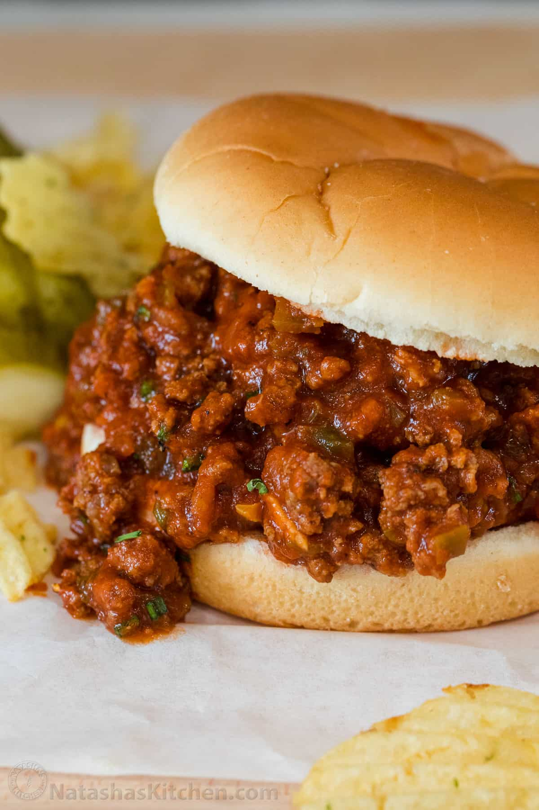

Sloppy Joes

Description
Saucy, beefy and so satisfying. We’re convinced this is the BEST recipe for a homemade Sloppy Joe.
Ground beef in a hearty tomato sauce served on toasted hamburger buns is a great idea for lunch or dinner.
Ingredients
- 1 small onion, finely chopped
- 1/2 small green bell pepper, seeded and finely diced
- 1 Tbsp worcestershire sauce
- 1 1/2 tsp yellow mustard
- 1 Tbsp brown sugar
- 15 oz can tomato sauce
- 1 lb lean ground beef, 85%-90% lean
- 1 Tbsp olive oil
- 1/2 tsp salt, or to taste
- 1/4 tsp ground black pepper, or to taste
- 3 garlic cloves, minced
- 1/4 cup water, optional, or added to desired consistency
- 4 hamburger buns, toasted if desired
Steps
-
Finely chop the onion. Seed and finely dice the green pepper.
-
In a bowl, combine the Worcestershire sauce, mustard, brown sugar, and tomato sauce.
-
Place a large skillet or dutch oven over medium/high heat. Add olive oil and ground beef.
Saute the beef for about 5 minutes until cooked through and no longer pink, breaking it up with a spatula.
Season with salt and pepper and add in the diced peppers and onion. Cook another 5 minutes until the veggies
are tender and beef is browned.
-
Add the minced garlic and saute 30 seconds until fragrant, stirring constantly. Add in the sauce and bring to
a light boil. Reduce heat to low and simmer uncovered for about 10-15 minutes or until thickened to your liking.
Season to taste with salt and pepper and add water if you prefer a looser consistency. Serve on toasted buns for
Sloppy Joe Sandwiches.